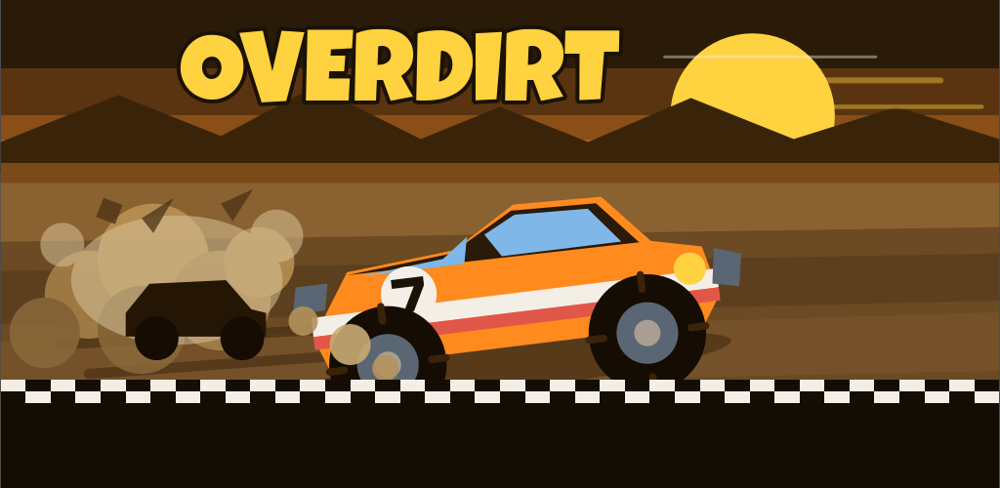

BGF SOFT
Jogos para Android de Bruno Guedes Faria.

Overdirt
Corrida arcade de terra vista de cima, do jeito que os fliperamas faziam: volta curta, disputa lado a lado e nitro guardado para a hora certa. 30 circuitos, 8 carros, quatro modos — e funciona offline, do primeiro ao último circuito.
Em breve na Google Play.